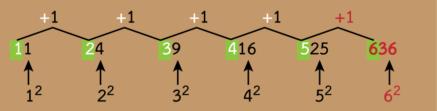
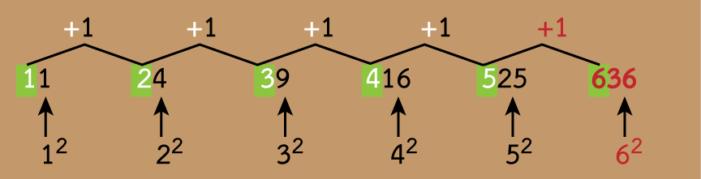

เฉลยคำตอบ ข้อสอบชุดเต็ม ชุดที่ 1
การเฉลยในชุดนี้ จะเป็นการอธิบายอย่างสั้น พอเข้าใจ ถ้าท่านอ่านแล้วยังสงสัย ให้กลับไปศึกษาในเมนูที่เกี่ยวข้อง หรือ ฝึกประสบการณ์ในเรื่องนั้น ๆ จากในหน้าเมนู ให้มากขึ้น
ความสามารถในการคิดวิเคราะห์เชิงภาษา
(เกณฑ์ผ่าน 60% สำหรับ ป.ตรี หรือ 65% สำหรับ ป.โท )
(เกณฑ์ผ่าน 60% สำหรับ ป.ตรี หรือ 65% สำหรับ ป.โท )
การเรียงประโยค
คำสั่ง: ข้อ 1-5 จงพิจารณาข้อความในตัวเลือก 1. ถึง 4. แล้วจัดเรียงลําดับให้ถูกต้อง
ข้อ 1. ข้อความใดอยู่ลำดับที่ 3
- จากประชาชน ผู้เป็นเจ้าของอำนาจอธิปไตยโดยตรง
- ที่ผู้นำประเทศได้รับอำนาจและความชอบธรรมในการบริหารประเทศ
- ประชาธิปไตย เป็นรูปแบบการปกครองตามอุดมการณ์สากล
- บนพื้นฐานของสิทธิเสรีภาพ ความเสมอภาค และการเคารพศักดิ์ศรีแห่งความเป็นมนุษย์
เฉลย
เรียงข้อความได้ดังนี้: 3-2-1-4
ข้อ 2. ข้อความใดอยู่ลำดับที่ 4
- อาจจะช่วยให้ปัญหาการจราจรในกรุงเทพ ฯ บรรเทาลง
- เพื่อเชื่อมโยงโลจิสติกส์และการพัฒนาระบบการขนส่งสาธารณะมีความก้าวหน้ามากขึ้น
- ปัญหาการจราจรติดขัดคงไม่สามารถแก้ไขให้หมดไปได้ในระยะเวลาอันสั้น
- แต่มองไปในระยะข้างหน้า หากแผนการลงทุนโครงสร้างพื้นฐานของภาครัฐ
เฉลย
เรียงข้อความได้ดังนี้: 3 – 4 – 2 - 1
ข้อ 3. ข้อความใดอยู่ลําดับที่ 2
- เพื่อให้ประเทศหลุดพ้นจากกับดักการพัฒนาทั้งในเชิงเศรษกิจและสังคม
- ในการส่งเสริมการพัฒนาและการใช้นวัตกรรมเทคโนโลยีดิจิทัล
- โดยมีแนวนโยบายด้านดิจิทัลของรัฐบาลที่ชัดเจน
- ประเทศไทยได้เริ่มพัฒนาอย่างจริงจังเข้าสู่ระบบเศรษฐกิจดิจิทัล
เฉลย
เรียงข้อความได้ดังนี้: 4 – 3 – 2 – 1
ข้อ 4. ข้อความใดอยู่ลำดับที่ 3
- ตรงกับช่วงหลังฤดูกาลเก็บเกี่ยวพืชพันธุ์ธัญญาหาร
- สมัยก่อนถือวันสงกรานต์เป็นวันขึ้นปีใหม่ไทย
- และเปิดโอกาสให้หนุ่มสาวได้พบกันและเล่นสาดน้ำกัน เพื่อคลายความร้อนในเดือนเมษายน
- คนสมัยโบราณจึงคิดทำกิจกรรมเพื่อเป็นการพักผ่อนหลังจากทำงาน
เฉลย
เรียงข้อความได้ดังนี้: 2 – 1 – 4 – 3
ข้อ 5. ข้อความใดอยู่ลําดับที่ 1
- ที่รับเอาความทันสมัยของระบบการผลิต การตลาด การค้า การบริโภคเทคโนโลยีการสื่อสาร
- ส่งผลให้การใช้ชีวิตในสังคมชนบทไทยสมัยใหม่มีลักษณะที่คล้ายคลึงกับสังคมเมือง
- สังคมชนบทไทยได้เข้าสู่กระบวนการเปลี่ยนผ่านสู่สังคมชนบทยุคใหม่
- แนวคิดการพัฒนาและนโยบายจากภาครัฐเข้ามาเป็นส่วนหนึ่งในการดำเนินชีวิต
เฉลย
เรียงข้อความได้ดังนี้: 3 – 2 – 1 – 4
ความเข้าใจภาษา
คำสั่ง: ข้อ 6 - 15 อ่านข้อความแล้วตอบคำถาม
ข้อ 6.
การวิเคราะห์สารหรือการจับใจความ เป็นกระบวนการอ่านที่ต่อเนื่องจากการวิเคราะห์สาร ผู้อ่านต้องตีความว่าผู้เขียนมีเจตนาอย่างไรในการเสนอเรื่องราว ผู้เขียนมีความคิดเห็นอย่างไร หรือความรู้สึกอย่างไร ตลอดจนผู้เขียนต้องการสื่อสารอะไรกับผู้อ่านซึ่งสิ่งเหล่านี้ไม่ได้ปรากฏอย่างชัดเจนในเนื้อหา การอ่านจับใจความจึงเป็นการทำความเข้าใจ หรือหาความหมายที่แท้จริงของข้อความเพื่อค้นหาจุดประสงค์หรือสาระสำคัญที่ผู้เขียนต้องการสื่อถึงผู้อ่าน
ใจความสำคัญของบทความนี้ คือข้อใด
เฉลย: ตอบ 1
ประโยคสุดท้าย เป็นการสรุปใจความสำคัญ สังเกตที่มีคำว่า "จึง"
ข้อ 7.
ความมหัศจรรย์ของธรรมชาตินั้นยังมีอยู่มากที่เรายังค้นหาไม่พบ พืชแปลก ๆ ที่มีรูปทรงแตกต่างไปจากพืชที่เราพบเห็นกันทั่วไปมีอยู่เป็นจำนวนมาก สัตว์อีกหลายชนิดที่ยังซุกซ่อนตัวอยู่ในซอกหลืบที่มนุษย์ยังเข้าไปไม่ถึง ยังมีสิ่งมีชีวิตอีกนานาชนิดที่นักวิทยาศาสตร์ยังไม่ได้จำแนกหรือตั้งชื่อในทางวิทยาศาสตร์ และมีจำนวนไม่น้อยที่สูญพันธุ์ไปก่อนการค้นพบ
สาระสำคัญของบทความข้างต้นคือข้อใด
เฉลย: ตอบ 3
ประโยคแรกเป็นใจความสำคัญ ประโยคที่ตามมาเป็นส่วนขยายว่า ธรรมชาติที่ยังหาไม่พบ มีจำนวนมาก เช่น อะไรบ้าง
ข้อ 8.
ขณะนี้โลกกำลังประสบความตึงเครียดและความแตกสลาย เพราะการพัฒนาทางวัตถุที่ทอดทิ้งการพัฒนาทางจิตวิญญาณ สังคมไทยมีจุดแข็งที่ซ่อนเร้นอยู่ คือ จุดแข็งทางวัฒนธรรมและจิตวิญญาณ จริงอยู่ประเทศไทยต้องสร้างความเข้มแข็งทางวิทยาศาสตร์และเทคโนโลยี แต่เป็นการสร้างความเข้มแข็งที่ตามเขา ความเข้มแข็งที่เราอาจจะนำเขาได้ คือ ความเข้มแข็งทางวัฒนธรรมและจิตวิญญาณ
ข้อใด คือใจความสำคัญของเรื่องนี้
เฉลย: ตอบ 2
ใจความสำคัญ อยู่กระจายทั้งบทอ่าน สรุปได้ตามข้อ 2
ข้อ 9.
คนไม่อ่านหนังสือ คือ คนถอยหลังอยู่ในสังคม เพราะทุกวันนี้โลกเจริญขึ้นอย่างไม่หยุดหย่อนมีเหตุการณ์ใหม่ๆ ปรากฎสืบเนื่องกันอย่างไม่ขาดสาย ทุกคนที่หวังความก้าวหน้า จึงต้องตามเรื่องเหล่านี้ด้วยการอ่านอย่างมิหยุดยั้ง มิฉะนั้นเขาจะได้นามว่า เป็นผู้ถอยหลัง
ข้อใด สรุปสาระสำคัญของบทความนี้ ได้ถูกต้อง
เฉลย: ตอบ 2
ใจความสำคัญ อยู่ที่ประโยคแรก สังเกตมีคำเชื่อมหน้าข้อความขยาย คำว่า เพราะ ส่วนที่เหลือเป็นข้อความขยายว่า เพราะอะไร จึงเป็นเช่นนั้น
ข้อ 10.
ยังมีนักเรียนธรรมของเราเป็นจำนวนมาก ซึ่งไม่เข้าใจความหมายของคำว่า "ทาน" ดี จึงทำให้คิดเขวไปว่า ทานกับบุญเป็นคนละอย่างกัน ความเข้าใจอันนี้ทำให้เราพูดติดปากกันว่า "ไปทำบุญแล้วให้ทาน" ดูประหนึ่งว่าทำบุญกับให้ทานไม่ได้เป็นของคู่กัน หรือแยกออกจากกัน ความจริง บุญหรือทานก็เป็นอันเดียวกัน ทานเป็นวิธีการทำบุญอย่างหนึ่งนั่นเอง
ข้อใดสรุปได้ถูกต้อง
เฉลย: ตอบ 3
ประโยคใจความสำคัญคือ "ความจริง บุญหรือทานก็เป็นอันเดียวกัน"
ข้อ 11.
ขึ้นขื่อว่า“เกลือ” ย่อมมีประโยชน์มากกว่าความเค็มในการทําสปา เกลือมี บทบาทในการขัดผิวและแช่ตัว การขัดผิวด้วยเกลือจะช่วยขัดคราบไคล และช่วยให้ผิวมีความชุ่มชื้นมากขึ้น และยังกระตุ้นเซลล์ผิวที่ตายแล้ว และถ้าได้นอนแช่น้ำเกลือก็จะยิ่งผ่อนคลายจากความเมื่อยล้าได้เป็นอย่างดี
ข้อใดคือสาระสำคัญของบทความนี้
เฉลย: ตอบ 4
ใจความสำคัญอยู่ที่ประโยคแรก ประโยคที่ตามมา เป็นการขยายความเกี่ยวกับประโยชน์ของเกลือ
สำหรับ ข้อ 12-13
ในร่างกายมนุษย์ ส่วนที่แข็งที่สุด คือฟัน โดยเฉพาะส่วนที่เป็นเคลือบฟัน จะแข็งที่สุด เพราะมีแคลเซียมเป็นส่วนประกอบสำคัญ แต่ถึงจะแข็งอย่างไร ฟันก็ผุได้เมื่อถูกกรดทำลาย หากฟันได้รับฟลูออไรด์ จะทำให้แคลเซียม ที่เป็นส่วนประกอบสำคัญของฟันมีฟลูออไรด์อยู่ด้วย ทำให้ฟันมีคุณสมบัติที่แกร่งกว่าฟันที่มีสารประกอบแคลเซียมธรรมดา ทำให้ทนต่อการกัดของกรด จึงผุยากขึ้น นอกจากนั้นฟลูออไรด์ยังช่วยยับยั้ง การทำงานของเอนไซม์ในแผ่นคราบจุลินทรีย์ ซึ่งจะมีผลทำให้เกิดกรดน้อยลง และโอกาสที่จะเกิดการกัดกร่อนจากกรดจึงน้อยลงด้วย
ข้อ 12.
ข้อใด ไม่ใช่ ข้อดีของฟลูออไรด์
เฉลย: ตอบ 4
บทความไม่ได้พูดถึง ความสวยงามของฟัน
ข้อ 13.
สาระสําคัญของบทความนี้ ตรงกับข้อใด
เฉลย: ตอบ 3
บทความพูดถึงบทบาทของ การสึกหรอของฟัน คือ 1) ทำให้ฟันแข็งแรง และ 2) ช่วยป้องกันฟันผุ
สำหรับ ข้อ 14-15
ชีวิตที่เรียบง่ายของคนอีสาน ที่ต้องพึ่งพิงธรรมชาติตั้งแต่เกิดจนตาย นั่นก็คือการทำไร่ทำนา หากแต่ผลกำไรจากสิ่งเหล่านี้ มิได้ส่งผลคุ้มค่าให้กับพวกเขาเท่าที่ควร เพราะสภาพภูมิอากาศที่ไม่เอื้ออำนวยนั่นเอง
เมื่อเป็นเช่นนี้ชาวอีสานจึงจำเป็นต้องหาอาชีพเสริมให้กับตัวเอง หลังจากสิ้นสุดฤดูการเก็บเกี่ยว ที่ต้องอาศัยระยะเวลานานกว่าที่จะเริ่มทำใหม่อีกหน บรรดาพ่อบ้านก็อาจจะคิดทำชิ้นงานที่เกิดจากธรรมชาติ เพื่อสร้างเสริมรายได้ นั่นก็คือ การจักสาน โดยเฉพาะผลิตภัณฑ์เครื่องจักสารจากไม้ไผ่ ซึ่งเป็นงานสร้างสรรค์ทางศิลปะ ที่ต้องอาศัยจินตนาการ ความพยายาม และส่ิ่งสำคัญก็คือ ความคิดของชาวบ้าน ที่จะสร้างงานในรูปแบบใหม่่ ๆ เพื่อให้เกิดความสะดุดตา ต่อผู้ที่ได้พบเห็น
นอกจากนี้ ยังมีงานที่สร้างชื่อเสียงให้กับชาวอีสาน อีกชนิดหนึ่งก็คือ ผลิตภัณฑ์จากกะลามะพร้าว ผลงานที่สร้างสรรค์ขึ้นจากเศษวัสดุธรรมชาติ นำมาทำเป็นข้าวของเครื่องใช้หลายรูปแบบ เช่น ทัพพี ช้อนส้อม และกิ๊บติดผม เป็นต้น
สินค้าหัตถกรรมของชาวอีสาน ไม่เพียงแต่จะมีความดโดเด่นในด้านความสวยงามเท่านั้น แต่ยังเปี่ยมไปด้วยคุณภาพ อีกด้วย
เมื่อเป็นเช่นนี้ชาวอีสานจึงจำเป็นต้องหาอาชีพเสริมให้กับตัวเอง หลังจากสิ้นสุดฤดูการเก็บเกี่ยว ที่ต้องอาศัยระยะเวลานานกว่าที่จะเริ่มทำใหม่อีกหน บรรดาพ่อบ้านก็อาจจะคิดทำชิ้นงานที่เกิดจากธรรมชาติ เพื่อสร้างเสริมรายได้ นั่นก็คือ การจักสาน โดยเฉพาะผลิตภัณฑ์เครื่องจักสารจากไม้ไผ่ ซึ่งเป็นงานสร้างสรรค์ทางศิลปะ ที่ต้องอาศัยจินตนาการ ความพยายาม และส่ิ่งสำคัญก็คือ ความคิดของชาวบ้าน ที่จะสร้างงานในรูปแบบใหม่่ ๆ เพื่อให้เกิดความสะดุดตา ต่อผู้ที่ได้พบเห็น
นอกจากนี้ ยังมีงานที่สร้างชื่อเสียงให้กับชาวอีสาน อีกชนิดหนึ่งก็คือ ผลิตภัณฑ์จากกะลามะพร้าว ผลงานที่สร้างสรรค์ขึ้นจากเศษวัสดุธรรมชาติ นำมาทำเป็นข้าวของเครื่องใช้หลายรูปแบบ เช่น ทัพพี ช้อนส้อม และกิ๊บติดผม เป็นต้น
สินค้าหัตถกรรมของชาวอีสาน ไม่เพียงแต่จะมีความดโดเด่นในด้านความสวยงามเท่านั้น แต่ยังเปี่ยมไปด้วยคุณภาพ อีกด้วย
ข้อ 14.
อาชีพเสริมที่กล่าวถึงในบทความนี้ มีกี่อย่าง?
เฉลย: ตอบ 1
มี 2 อย่าง ได้แก่ การจักสาน และผลิตภัณฑ์จากกะลามะพร้าว
ข้อ 15.
สาระสำคัญของบทความนี้ คือข้อใด?
เฉลย: ตอบ 2
บทความพูดถึงหัตถกรรมพื้นบ้านของชาวอีสาน คืองานจักสาน และ งานกะลามะพร้าว พร้อมทั้งสรุปในตอนท้ายว่า หัตถกรรมของชาวอีสาน นอกจากจะสวยแล้วยังคุณภาพดีอีกด้วย ซึ่งเป็นย้ำว่า ไม่ได้พูดเรื่องอื่น นอกจากเรื่อง สินค้าหัตถกรรมของชาวอีสาน
ความสามารถในการคิดวิเคราะห์เชิงนามธรรม
อุปมาอุปไมย
ข้อ 16. รวย : จน :: ? : ?
เปรียบเทียบ มากกว่า - น้อยกว่า
ข้อ 17. ไวท์บอร์ด : ปากกาเคมี :: ? : ?
ไวท์บอร์ด ใช้ ปากกาเคมี เขียน
กระดานดำ ใช้ ชอล์ก เขียน
ข้อ 18. ซื่อสัตย์ : หลอกลวง :: ? : ?
ความหมายตรงกันข้าม
ข้อ 19. ร่าเริง : ซึมเศร้า :: ? : ?
ความหมายตรงกันข้าม
ข้อ 20. กรรไกร : กระดาษ :: : ?
กรรไกร ใช้ตัด กระดาษ
เลื่อย ใช้ตัด ไม้
การสรุปความจากภาษา
คำสั่ง ในแต่ละข้อจะประกอบด้วยเงื่อนไขหรือข้อมูลที่กำหนดให้ และข้อสรุปเป็นคู่ ๆ จากเงื่อนไขนั้น ให้ศึกษาเงื่อนไขที่กำหนดให้ก่อน แล้วจึงอาศัยความรู้ที่ได้จากเงื่อนไขดังกล่าวมาใช้พิจารณา ข้อสรุปทั้งสองของแต่ละข้อ แล้วทำตอบลงในกระดาษคำตอบ โดยยึดหลักในการทำตอบดังนี้

เงื่อนไข สำหรับข้อ 21-25
- อร โอ นก ออม และ แอม ไปงานแสดงสินค้าส่งออกเพื่อซื้อสินค้ามาตกแต่งโต๊ะทํางานคนละ 2 อย่าง คือ โคมไฟ แจกัน นาฬิกา กรอบรูป และฉากกั้น
- รายชื่อดังกล่าวไม่ได้เรียงลําดับในการเลือกซื้อ
- แอม และโอ เลือกซื้อของตกแต่งไม่เหมือนกัน
- ออม เลือกซื้อโคมไฟและนาฬิกา อร เลือกซื้อกรอบรูปและโคมไฟ
- มีคนที่เลือกซื้อฉากกั้นเพียง 1 คน และเลือกซื้อโคมไฟ 3 คน
- โอ เลือกซื้อแจกันเหมือน นก 1 อย่าง และเลือกซื้อนาฬิกาเหมือน ออม 1 อย่าง
- นก เลือกซื้อฉากกั้น
| โคมไฟ | แจกัน | นาฬิกา | กรอบรูป | ฉากกั้น | |
|---|---|---|---|---|---|
| อร | ✔ | ✘ | ✘ | ✔ | ✘ |
| โอ | ✘ | ✔ | ✔ | ✘ | ✘ |
| นก | ✘ | ✔ | ✘ | ✘ | ✔ |
| ออม | ✔ | ✘ | ✔ | ✘ | ✘ |
| แอม | ✔ | ✘ | ✘ | ✔ | ✘ |
ข้อ 21.
ข้อสรุปที่ 1 แอม เลือกซื้อแจกัน
ข้อสรุปที่ 2 โอ เลือกซื้อนาฬิกา
ข้อ 22.
ข้อสรุปที่ 1 โอ และ ออม เลือกซื้อนาฬิกาเหมือนกัน
ข้อสรุปที่ 2 นก เลือกซื้อแจกันและฉากกั้น
ข้อ 23.
ข้อสรุปที่ 1 มีคนเลือกซื้อแจกัน 2 คน
ข้อสรุปที่ 2 มีคนเลือกซื้อนาฬิกา 2 คน
ข้อ 24.
ข้อสรุปที่ 1 แอม เลือกซื้อกรอบรูป
ข้อสรุปที่ 2 โอ เลือกชื้อฉากกั้น
ข้อ 25.
ข้อสรุปที่ 1 มีคนเลือกซื้อกรอบรูป 3 คน
ข้อสรุปที่ 2 มีคนเลือกซื้อนาฬิกา 1 คน

ถ้า 2J < (K + L) = M < 3N > S และ
P < (Q + R) ≥ M < S/2
(กำหนดให้ทุกตัวอักษรเป็นเลขจำนวนนับ)
ข้อ 26.
เงื่อนไข
ถ้า 2J < (K + L) = M < 3N > S และ
P < (Q + R) ≥ M < S/2
(กำหนดให้ทุกตัวอักษรเป็นเลขจำนวนนับ)
ข้อสรุปที่ 2: J > M
เฉลย
(ดูเรื่อง "หลักการทำข้อสอบเงื่อนไขสัญลักษณ์" ในหน้าเมนู เพื่อความเข้าใจที่ดีขึ้น)
ข้อสรุปที่ 1: M < K
จาก M ไป K ตามเงื่อนไข คือ
M = K + L
ได้ M เหมือนข้อสรุปข้างหนึ่งแล้ว อีกข้างเอา K มาเทียบได้
M = K + L > K
ยุบรวม
M > K
ตัดสินข้อสรุป
ข้อสรุปที่ 1: M < K
ข้อสรุปที่ 1 เป็นเท็จ
ข้อสรุปที่ 2: J > M
จาก J ไป M ตามเงื่อนไข คือ
2J < (K + L) = M
ยุบรวม
2J < M
ได้ M เหมือนข้อสรุปข้างหนึ่งแล้ว อีกข้างเอา J มาเทียบได้
J < 2J < M
ยุบรวม
J < M
ตัดสินข้อสรุป
ข้อสรุปที่ 2: J > M
ข้อสรุปที่ 2 เป็นเท็จ
ข้อสรุปที่ 1: เท็จ
ข้อสรุปที่ 2: เท็จ
ตอบ ข้อ 2 ข้อสรุปเป็นเท็จทั้งสองข้อ
ข้อ 27.
เงื่อนไข
ถ้า 2J < (K + L) = M < 3N > S และ
P < (Q + R) ≥ M < S/2
(กำหนดให้ทุกตัวอักษรเป็นเลขจำนวนนับ)
ข้อสรุปที่ 2: 3S > M
ข้อสรุปที่ 1: L < 3N
จาก L ไป 3N ตามเงื่อนไข คือ
K + L = M < 3N
ยุบรวม
K + L < 3N
ได้ 3N เหมือนข้อสรุปข้างหนึ่งแล้ว อีกข้างเอา L มาเทียบได้
L < K + L < 3N
ยุบรวม
L < 3N
ตัดสินข้อสรุป
ข้อสรุปที่ 1: L < 3N
ข้อสรุปที่ 1 เป็นจริง
ข้อสรุปที่ 2: 3S > M
จาก S ไป M ตามเงื่อนไข คือ
S < 3N > M
มีเครื่องหมายสวนกัน สรุปได้ไม่แน่ชัด
ลองดูอีกเส้นทางหนึ่ง จากเงื่อนไขบรรทัดล่าง
S/2 > M
ได้ M เหมือนข้อสรุปข้างหนึ่งแล้ว อีกข้างเอา 3S มาเทียบได้
S สามตัว ย่อมมากกว่า S ครึ่งตัว
3S > S/2 > M
ยุบรวม
3S > M
ตัดสินข้อสรุป
ข้อสรุปที่ 2: 3S > M
ข้อสรุปที่ 2 เป็นจริง
ข้อสรุปที่ 1: จริง
ข้อสรุปที่ 2: จริง
ตอบ 1 ข้อสรุปเป็นจริงทั้งสองข้อ
ข้อ 28.
เงื่อนไข
ถ้า 2J < (K + L) = M < 3N > S และ
P < (Q + R) ≥ M < S/2
(กำหนดให้ทุกตัวอักษรเป็นเลขจำนวนนับ)
ข้อสรุปที่ 2: 2L > S
ข้อสรุปที่ 1: J < K
จาก J ไป K ตามเงื่อนไข คือ
2J < (K + L)
เอา 2 หาร เพื่อให้ได้ข้างหนึ่งเหมือนข้อสรุป
2J/2 < (K + L)/2
J < K/2 + L/2
ได้ J เหมือนข้อสรุปข้างหนึ่งแล้ว อีกข้างเอา K มาเทียบได้
ระหว่าง K/2 + L/2 กับ K เราจะไม่รู้ว่า ใครจะมากหรือน้อยกว่ากัน
K/2 = 0.5K
L/2 = 0.5L
และ
K = 0.5K + 0.5K
นั่นคือ เปรียบเทียบระหว่าง
(0.5K + 0.5L) กับ (0.5K + 0.5K)
ตัด 0.5K ออกไปเพราะเท่ากันอยู่แล้ว
จึงเหลือการเปรียบเทียบ ระหว่าง 0.5L และ 0.5K
จากเงื่อนไข เราไม่มีข้อมูลการเปรียบเทียบ ระหว่าง L กับ K
จึงไม่สามารถสรุปได้แน่ชัด
สรุปว่า ข้อสรุปที่ 1 สรุปได้ไม่แน่นอน
ข้อสรุปที่ 2: 2L > S
จาก L ไป S ตามเงื่อนไข คือ
(K + L) = M < 3N > S
มีเครื่องหมายสวนทางกัน สรุปได้ไม่แน่ชัด
ลองดูเส้นทางอื่น
จาก L ไป S ผ่าน M คือ
(K + L) =M < S/2
ยุบรวม
(K + L) < S/2
เอา 2 คูณตลอด เพื่อกำจัดส่วนให้หมดไป
2(K + L) < 2S/2
(2K + 2L) < S
ได้ S เหมือนข้อสรุปข้างหนึ่งแล้ว อีกข้างเอา 2L มาเทียบได้
2L < (2K + 2L) < S
ยุบรวม
2L < S
ตัดสินข้อสรุปที่ 2
ข้อสรุปที่ 2: 2L > S
ข้อสรุปที่ 2 เป็นเท็จ
ข้อสรุปที่ 1: ไม่แน่ชัด
ข้อสรุปที่ 2: เท็จ
ตอบ ข้อ 4 ข้อสรุปต่างกัน
ข้อ 29.
เงื่อนไข
ถ้า 2J < (K + L) = M < 3N > S และ
P < (Q + R) ≥ M < S/2
(กำหนดให้ทุกตัวอักษรเป็นเลขจำนวนนับ)
ข้อสรุปที่ 2: P < 2R
ข้อสรุปที่ 1: 2K + 2L < 3N
จาก 2K + 2L ไป 3N ตามเงื่อนไข คือ
(K + L) = M < 3N
ยุบรวม
(K + L) < 3N
ได้ 3N เหมือนข้อสรุปข้างหนึ่งแล้ว อีกข้างเอา (2K + 2L) มาเทียบได้
(2K + 2L) > (K + L) < 3N
มีเครื่องหมายสวนทางกัน สรุปได้ไม่แน่ชัด
ลองดูอีกทาง
(K + L) ไป 3N ผ่าน M และ S
(K + L) = M < S/2 < S < 3N
ยุบรวม
(K + L) < 3N
ได้ 3N เหมือนข้อสรุปข้างหนึ่งแล้ว อีกข้างเอา (2K + 2L) มาเทียบได้
(2K + 2L) > (K + L) < 3N
มีเครื่องหมายสวนทางกัน สรุปได้ไม่แน่ชัด
ลองดูอีกที
ถ้า จาก (K + L) ไป 3N ผ่าน M ไป S และเปรียบเทียบกับ 3L
จากเงื่อนไข
(K + L) = M < S/2
ยุบรวม
(K + L) < S/2
เอา 2 คูณตลอด เพื่อให้ได้ (2K + 2L) เหมือนข้อสรุป
2(K + L) < 2S/2
2K + 2L < S ---- (1)
แต่จากเงื่อนไขบรรทัดบน เราทราบว่า
S < 3N ----- (2)
(1) + (2) เราจะได้
2K + 2L < S < 3N
ยุบรวม
2K + 2L < 3N
ตัดสินข้อสรุปที่ 1
ข้อสรุปที่ 1: 2K + 2L < 3N
ข้อสรุปที่ 1 เป็นจริง
ข้อสรุปที่ 2: P < 2R
จาก P ไป R ตามเงื่อนไข คือ
P < (Q + R)
ได้ P เหมือนข้อสรุปข้างหนึ่งแล้ว อีกข้าง เอา 2R มาเทียบได้
P < (Q + R) ?? 2R
2R คือ (R + R) ดังนั้น
P < (Q + R) ?? (R + R)
P < (Q +
R เท่ากับ R ตัดออกไปได้ จึงเหลือ การเปรียบเทียบระหว่าง Q กับ R
ระหว่าง Q และ R ในเงื่อนไขไม่มีข้อมูลที่จะให้เราหาความสัมพันธ์ระหว่างกันได้ จึงไม่มีทางที่เราจะนำ Q และ R มาเปรียบเทียบกันได้ ทำให้ไม่รู้ว่า Q กับ R ใครจะมาก-น้อยกว่ากัน
จึงสรุปว่า ไม่แน่ชัด
ข้อสรุปที่ 1: จริง
ข้อสรุปที่ 2: ไม่แน่ชัด
ตอบ ข้อ 4 ผลการสรุปต่างกัน
ข้อ 30.
เงื่อนไข
ถ้า 2J < (K + L) = M < 3N > S และ
P < (Q + R) ≥ M < S/2
(กำหนดให้ทุกตัวอักษรเป็นเลขจำนวนนับ)
ข้อสรุปที่ 2: M > J
ข้อสรุปที่ 1: K = R
จาก K ไป R ผ่าน M คือ
(K + L) = M ≤ (Q + R)
ยุบรวม
(K + L) ≤ (Q + R)
จากเงื่อนไข ไม่มีข้อมูลความสัมพันธ์ระหว่าง K, L, Q และ R ในการเปรียบเทียบกันเลย จึงสรุปว่า สรุปได้ไม่แน่ชัด
ข้อสรุปที่ 1: K = R -- ไม่แน่ชัด
ข้อสรุปที่ 2: M > J
จาก M ไป J ตามเงื่อนไขบรรทัดบน คือ
M = (K + L) > 2J
ยุบรวม
M > 2J
เหมือนข้อสรุปข้างหนึ่งแล้ว เอา J มาเทียบได้
M > 2J > J
ยุบรวม
M > J
ตัดสินข้อสรุป
ข้อสรุปที่ 2: M > J
ข้อสรุปที่ 2 เป็นจริง
ข้อสรุปที่ 1: ไม่แน่ชัด
ข้อสรุปที่ 2: จริง
ตอบ ข้อ 4 ผลการสรุปต่างกัน
ถ้า A/B = 3 = (C + D) = E และ
C ≯ F ≯ G
(กำหนดให้ทุกตัวอักษรเป็นเลขจำนวนนับ)
ข้อ 31.
(ข้อสอบเสมือนจริง กพ พิเศษ 19 ก.พ. 2566 -- รูปแบบใหม่ มีเลขจำนวนเต็ม)
เงื่อนไข
ถ้า A/B = 3 = (C + D) = E และ
C ≯ F ≯ G
(กำหนดให้ทุกตัวอักษรเป็นเลขจำนวนนับ)
ข้อสรุปที่ 1: A > B
ข้อสรุปที่ 2: E < C
ข้อสรุปที่ 1: A > B
จากเงื่อนไขที่ 1
A/B = 3
คูณไขว้
A = 3B
เอา B มาเทียบ
A = 3B > B
ยุบรวม
A > B
ข้อสรุปที่ 1 เป็นจริง
ข้อสรุปที่ 2: E < C
จากเงื่อนไข E = (C + D)
E = (C + D) > C
E > C
ข้อสรุปที่ 2 เป็นเท็จ
ตอบ ตัวเลือกข้อ 4
ข้อ 32.
เงื่อนไข
ถ้า A/B = 3 = (C + D) = E และ
C ≯ F ≯ G
(กำหนดให้ทุกตัวอักษรเป็นเลขจำนวนนับ)
ข้อสรุปที่ 1: 3 < BE
ข้อสรุปที่ 2: B > E
ข้อสรุปที่ 1: 3 < BE
จากเงื่อนไข A/B = 3
เอา B คูณทั้งสองข้าง
A = 3B
หรือพูดได้ว่า A มีค่าเป็น 3 เท่าของ B
จากการที่โจทย์มีข้อกำหนดให้ทุกตัวอักษรเป็นเลขจำนวนนับ
จำนวนนับ คือ จำนวนเต็มบวก เริ่มตั้งแต่ 1 ขึ้นไป
เลขทศนิยมไม่ใช่เลขจำนวนเต็ม
ดังนั้น ทุกตัวอักษรจะมีค่า เป็น 1, 2, 3, 4, 5, 6, ... ไปเรื่อย ๆ
เมื่อ A มีค่าเป็น 3 เท่าของ B
A จะเท่ากับ 1 ไม่ได้ เพราะ ถ้า A เท่ากับ 1 จะทำให้ B มีค่าไม่ถึง 1
นั่นคือ A = 3(0.333...) ในกรณีนี้จะทำให้ B มีค่าเป็นทศนิยม คือ 0.333... ซึ่งขัดกับที่โจทย์กำหนดไว้ว่า ให้เป็นเลขจำนวนนับ
ถ้า A = 2
2 = 3(B)
B = 0.666...
ดังนั้น A เท่ากับ 2 ไม่ได้
ถ้า A = 3
3 = 3(B)
B = 1
สรุปว่า A ต้องมีค่า ตั้งแต่ 3 ขึ้นไป
A ≥ 3
กลับมาดูเงื่อนไขแรก
ถ้า A/B = 3 = (C + D) = E
เรารู้ว่า A > B และ A ≥ 3
ปรับเขียนเงื่อนไขใหม่ เป็น
เงื่อนไขที่ 1: B < A ≥ 3 = (C + D) = E และ
เงื่อนไขที่ 2: C ≯ F ≯ G
ข้อสรุปที่ 1 3 < BE
ตามเงื่อนไขที่ 1 ที่ปรับแล้ว
จาก 3 ไป B พบว่า มีเครื่องหมายสวนทางกัน จึงสรุปไม่ได้
แต่ลองทำโดยวิธีการแทนค่าดูบ้าง
ตามเงื่อนไข จาก 3 ไป E คือ
3 = (C + D) = E
3 = E
แทนค่า E ด้วย 3 ในข้อสรุป ที่ 1
3 < B(3)
แต่เราไม่รู้ว่า B จะมีค่าเท่าไร รู้แต่เพียงว่า มีค่าตั้งแต่ 1 ขึ้นไป
ลองแทนค่า B ดู
ถ้า B = 1 ข้อสรุปที่ว่า 3 < BE เป็นเท็จ เพราะ
3 = 1(3)
3 = 3
ถ้า B = 2 ข้อสรุปที่ว่า 3 < BE เป็นจริง เพราะ
3 < 2(3)
3 < 6
ข้อสรุปจากการพิสูจน์เงื่อนไข คือ 3 อาจจะเท่ากับ BE หรือ น้อยกว่า BE ก็ได้ นั่นคือ
3 ≤ BE
ดังนั้น ข้อสรุปของโจทย์ที่ 1 ที่ว่า 3 < BE จึงไม่ครอบคลุมผลการพิสูจน์ของเรา เพราะไม่ครอบคลุมกรณีเท่ากัน หรือพูดอีกอย่างว่า บางที 3 ก็น้อยกว่า BE บางที 3 ก็เท่ากับ BE บางทีก็มากกว่า BE ทำให้ข้อสรุปที่ 1 สรุปได้ไม่แน่ชัด ทำให้ข้อสรุปที่ 1 สรุปได้ไม่แน่ชัด
ข้อสรุปที่ 1: สรุปได้ไม่แน่ชัด
ข้อสรุปที่ 2: B > E
จาก B ไปหา E ตามเงื่อนไขที่ปรับใหม่ จะเห็นว่ามีเครื่องหมายสวนทางกัน จึงสรุปไม่ได้
ข้อสรุปที่ 2: สรุปได้ไม่แน่ชัด
ตอบ ตัวเลือกข้อ 3 ข้อสรุปทั้งสองไม่สามารถสรุปได้แน่ชัด
ข้อ 33.
เงื่อนไข
ถ้า A/B = 3 = (C + D) = E และ
C ≯ F ≯ G
(กำหนดให้ทุกตัวอักษรเป็นเลขจำนวนนับ)
ข้อสรุปที่ 1: A + E ≥ B + 3
ข้อสรุปที่ 2: D ≠ C
ข้อสรุปที่ 1: A + E ≥ B + 3
เปรียบเทียบ 2 คู่ คือ A กับ B และ E กับ 3
จากเงื่อนไข A/B = 3
A = 3B
A = 3B > B
A > B --- (1)
จาก E ไป 3 ตามเงื่อนไข คือ
E = (C + D) = 3
E = 3 ---- (2)
(1) + (2)
A + E > B + 3
ดังนั้น ข้อสรุปที่ 1 ครอบคลุมเงื่อนไขที่พิสูจน์ได้
ข้อสรุปที่ 1 เป็นจริง
ข้อสรุปที่ 2: D ≠ C
จากเงื่อนไข 3 = (C + D)
C จะเท่ากับ D ไม่ได้ เพราะ ไม่มีเลขจำนวนนับใด ๆ (จำนวนเต็มบวก ใด ๆ) ที่เท่ากันและรวมกันได้ = 3
(เลขจำนวนนับ คือเลขจำนวนเต็มบวก เลขศูนย์ เป็นเลขจำนวนเต็ม แต่ไม่ถือว่า เป็นเลขจำนวนเต็มบวก ถือว่าเป็นกลาง (neutral) หรือ non-negative integer)
ถ้า C = 1, D ต้องเท่ากับ 2 จึงจะรวมกันได้ 3
ถ้า C = 2, D ต้องเท่ากับ 1 จึงจะรวมกันได้ 3
(C หรือ D จะมีค่าเป็น 1.5 ไม่ได้ เพราะ 1.5 ไม่ใช่จำนวนนับ)
ดังนั้น D ≠ C จึงเป็นจริง
ข้อสรุปที่ 2 เป็นจริง
ข้อสรุปที่ 1 เป็นจริง
ข้อสรุปที่ 2 เป็นจริง
ตอบ ข้อ 1
ข้อ 34.
เงื่อนไข
ถ้า A/B = 3 = (C + D) = E และ
C ≯ F ≯ G
(กำหนดให้ทุกตัวอักษรเป็นเลขจำนวนนับ)
ข้อสรุปที่ 1: 3 > 2C
ข้อสรุปที่ 2: B + C < F + A
ข้อสรุปที่ 1: 3 > 2C
จาก 3 ไป C ตามเงื่อนไขคือ
3 = (C + D)
เหมือนข้อสรุปข้างหนึ่งแล้ว อีกข้างเอา 2C มาเทียบได้
3 = (C + D) ?? 2C
3 = (C + D) ?? (C + C)
3 = (
ในเงื่อนไขไม่มีข้อมูลการเปรียบเทียบระหว่าง C กับ D
จึงไม่สามารถสรุปได้ว่า (C + D) กับ 2C อะไรมากกว่ากัน
ข้อสรุปที่ 1 จึงสรุปได้ไม่แน่ชัด
ข้อสรุปที่ 2: B + C < F + A
ยึดหลักที่ว่า
มาก + มาก ย่อมมากกว่า น้อย + น้อย
หรือ
น้อย + น้อย ย่อมน้อยกว่า มาก + มาก
ลองเปรียบเทียบ ระหว่าง B กับ F และ C กับ A
จาก B ไป F มีเครื่องหมายสวนทางกัน สรุปได้ไม่แน่ชัด
ลองเปรียบเทียบใหม่ ระหว่าง B กับ A และ C กับ F
จากการที่เราได้พิสูจน์มาแล้วว่า A = 3B
ดังนั้น
B < A ----- (1)
จากเงื่อนไขที่ 2 พบว่า
C ≤ F ----- (2)
(1) + (2)
เครื่องหมาย < มีลำดับสูงกว่าเครื่องหมาย ≤ รวมกันได้เครื่องหมาย <
B + C < A + F หรือ
B + C < F + A
ข้อสรุปที่ 2 เป็นจริง
ข้อสรุปที่ 1 ไม่แน่ชัด
ข้อสรุปที่ 2 เป็นจริง
ตอบ ตัวเลือกข้อ 4 ข้อสรุปทั้งสองข้อสรุปต่างกัน
ข้อ 35.
เงื่อนไข
ถ้า A/B = 3 = (C + D) = E และ
C ≯ F ≯ G
(กำหนดให้ทุกตัวอักษรเป็นเลขจำนวนนับ)
ข้อสรุปที่ 1: A/B = C + G
ข้อสรุปที่ 2: C = A
ข้อสรุปที่ 1:A/B < G + D
ดูเงื่อนไขในภาพรวม จะเห็นว่า
ในเงื่อนไขบรรทัดบน มี A/B และ C
ในเงื่อนไขบรรทัดล่าง มี C และ G
ถ้าเราเอา D มาบวกบรรทัดล่าง เราจะได้ (C + D) ใช้เป็นตัวเชื่อมได้ และเราก็จะได้ (G + D) ด้วย
กระสุนนัดเดียวได้นก 2 ตัว
เงื่อนไขบรรทัดล่าง เปลี่ยนเครื่องหมาย ปฏิเสธ เป็นเครื่องหมายปกติ
C ≤ F ≤ G
เอา D บวกตลอด
(C + D) ≤ (F + D) ≤ (G + D)
จาก A/B ไป (G + D) ตามเงื่อนไขคือ
A/B = 3 = (C+D) ≤ (F + D) ≤ (G + D)
ยุบรวม
A/B ≤ (G + D)
ตัดสินข้อสรุปที่ 1
ข้อสรุปที่ 1: A/B < (G + D)
ข้อพิสูจน์เงื่อนไขที่เราพิสูจน์ได้ คือ A/B ≤ (G + D)
ข้อสรุปไม่ครอบคลุมเงื่อนไข
ข้อสรุปที่ 1 สรุปได้ไม่แน่ชัด
ข้อสรุปที่ 2: C = A
จาก C ไปหา A ตามเงื่อนไข คือ
(C + D) = 3 = A/B
กำจัดส่วน เพื่อให้เหลือ A ข้างหนึ่งเหมือนข้อสรุป โดยการใช้ B คูณตลอด
B(C + D) = 3B = A
ยุบรวม
B(C + D) = A ได้ A ข้างหนึ่งแล้ว อีกข้าง เอา C มาเทียบได้
ธรรมดา C ก็น้อยกว่า C+D อยู่แล้ว ยิ่งเอา B มาคูณเพิ่ม C+D เข้าไปอีก ก็ยิ่งมากขึ้นกว่าเดิม C จึงน้อยกว่า B(C+D)
C < B(C + D) = A
ยุบรวม
C < A
ดังนั้น ข้อสรุปที่ 2 เป็นเท็จ
ข้อสรุปที่ 1 สรุปได้ไม่แน่ชัด
ข้อสรุปที่ 2 เป็นเท็จ
ตอบ ข้อ 4 ข้อสรุปทั้งสองข้อสรุปต่างกัน
ความสามารถในการคิดวิเคราะห์เชิงปริมาณ
อนุกรม
คำสั่ง จงเลือกคำตอบจากตัวเลือก 1. – 4. มาเติมลงในช่องว่าง เพื่อให้ได้อนุกรมที่มีความสัมพันธ์ต่อเนื่องกันอย่างสมเหตุสมผลมากที่สุด
ข้อ 36.
1/2 1/3 2/3 2 3 ........
หลัง ÷ หน้า → ตัวถัดไป
การหารเศษส่วน ให้เปลี่ยนเครื่องหมายหาร เป็นเครื่องหมายคูณ และกลับตัวหาร จากเศษเป็นส่วน
1/2 1/3 2/3 2 3 ........
หลัง ÷ หน้า → ตัวถัดไป
การหารเศษส่วน ให้เปลี่ยนเครื่องหมายหาร เป็นเครื่องหมายคูณ และกลับตัวหาร จากเศษเป็นส่วน
ข้อ 37.
11 24 39 416 525 ........
เป็นรูปแบบใหม่ แบบแยกร่าง
ต้องอาศัยการสังเกตลักษณะตัวเลข
เลขตัวหน้าของตัวหลัง = เลขตัวหน้าของตัวหน้า + 1
เลขตัวหลัง ยกกำลังสอง ของ 1, 2, 3 ...
ดังภาพ

11 24 39 416 525 ........
เป็นรูปแบบใหม่ แบบแยกร่าง
ต้องอาศัยการสังเกตลักษณะตัวเลข
เลขตัวหน้าของตัวหลัง = เลขตัวหน้าของตัวหน้า + 1
เลขตัวหลัง ยกกำลังสอง ของ 1, 2, 3 ...
ดังภาพ

ข้อ 38.
10 5 10 15 20 45 60 135 ........
เป็นอนุกรมซ้อน ดังภาพ
ข้อ 39.
59 68 76 82 84 ........
ข้อนี้เป็นรูปแบบใหม่ แบบแยกร่างแล้วรวม พบครั้งแรกในข้อสอบ ก.พ. ปี 2566
ถ้าตีแฉก(หลัง - หน้า) แบบธรรมดาทั่วไป จะได้คำตอบ 78
แต่คำตอบ 78 ไม่มีในตัวเลือกคำตอบ
อย่าเพิ่งคิดว่า ไม่มีคำตอบที่ถูก
ถ้าสังเกตให้ดี จะเห็นว่า
59 + 9 = 68
68 + 8 = 76
76 + 6 = 82
82 + 2 = 84
สรุปว่า ตัวถัดไป คือแยกเอาตัวหลังของตัวหน้า บวกกับตัวหน้าทั้งหมด
คำตอบคือ 84 + 4 = 88 ดังภาพ

ข้อ 40.
112 56 14 7/3 ........
ตีแฉก ดังภาพ
โจทย์คณิตศาสตร์
คำสั่ง จงเลือกคำตอบที่ถูกที่สุดจากตัวเลือก 1. – 4. แล้วกดเลือกคำตอบ
ข้อ 41.
ถ้า 5 * 4 = 41 และ
7 * 6 = 85 แล้ว
11 * 9 = ?
ตอบ
หน้ากำลังสอง + หลังกำลังสอง 112 + 92 = 202
ถ้า 5 * 4 = 41 และ
7 * 6 = 85 แล้ว
11 * 9 = ?
ตอบ
หน้ากำลังสอง + หลังกำลังสอง 112 + 92 = 202
ข้อ 42.
ซื้อของอย่างหนึ่งมาในราคา 2,550 บาท ถ้าต้องการขายให้ได้กำไร 30% จะต้องขายของชิ้นนี้ ในราคาเท่าไร
130% ของ 2,550 = 130/100 × 2,550 = 3,315 บาท
ข้อ 43.
มีสัตว์ทั้งหมด 2,448 ตัว โดยมี ไก่ : วัว = 3 : 4 และ วัว : หมู = 8 : 10 ถามว่า มีหมูมากกว่า ไก่ กี่ตัว
จะเห็นว่า อัตราส่วนที่ให้มา คือ
ไก่ : วัว = 3 : 4 และ
วัว : หมู = 8 : 10
มีตัวเชื่อมคือ วัว แต่ยังหาอัตราส่วน ไก่ : วัว : หมู ยังไม่ได้ เพราะ อัตราส่วนยังไม่เท่ากัน เราต้องทำให้ วัว เท่ากันก่อน โดยเอา 2 คูณ อัตราส่วน ไก่ : วัว เพื่อให้ วัว เป็น 8 จะได้เชื่อมกันได้
เอา 2 คูณ
ไก่ : วัว = 6 : 8
ดังนั้น ไก่ : วัว : หมู = 6 : 8 : 10
สัตว์ทั้งหมด 6+8+10 หรือ 24 ส่วน มีจำนวน 2,448 ตัว
มีไก่ 6 ส่วน คิดเป็น 2,448/24 × 6 = 612 ตัว
มีหมู 10 ส่วน คิดเป็น 2,448/24 × 10 = 1,020 ตัว
มีหมูมากกว่าไก่ = 1,020 - 612 = 408 ตัว
ตอบ 408 ตัว
ข้อ 44.
มีนักเรียน 8 คน อายุ 6, 7, 8, 10, 13, 14 ปี ส่วนที่เหลืออีก 2 คน เป็นเด็กฝาแฝด อายุเฉลี่ยของเด็กทั้ง 8 คน คือ 9 ปี อยากทราบว่า เด็กฝาแฝด อายุเท่าไร?
เด็กฝาแฝด อายุเท่ากัน
สมมุติให้เด็กฝาแฝด มีอายุ X ปี
เด็กฝาแฝด 2 คน อายุ = 2X ปี
เมื่อนำอายุมารวมกัน แล้วหารด้วยจำนวนคน ก็จะเป็นอายุเฉลี่ย
(6+7+8+10+13+14+2X)/8 = 9
คูณไขว้
(6+7+8+10+13+14+2X) = 9 × 8
2X = 72 - (6+7+8+10+13+14)
2X = 72 - 58
X = 14/2
X = 7
ข้อ 45.
นาย A ขายเสื้อฟุตบอลให้นาย B ได้กำไร 25% นาย B ขายให้นาย C ขาดทุน 40% นาย C ขายให้นาย D ขาดทุน 30% นาย D ซื้อจากนาย C เป็นเงิน 210 บาท ถามว่า นาย A ซื้อเสื้อตัวนี้มา กี่บาท?
วิธีคิด
C ขาย D 210 ขาดทุน 30%
ทุน 100 ขายไป 100-30 = 70
เทียบบัญญัติไตรยางค์
ขาย 70 ทุน 100
ถ้าขาย 210 ทุน = 100/70 × 210 = 300 บาท
หรือคิด 70% ของ 210 = ?
100/70 × 210 = 300 บาท
B ขาย C 300 ขาดทุน 40%
60% ของ 300 = 100/60 × 300 = 500 บาท
A ขาย B 500 กำไร 25%
125% ของ 500 = 100/125 × 500 = 400 บาท
ตอบ 400 บาท
การวิเคราะห์ข้อมูล
คำสั่ง ให้ศึกษาและทำความเข้าใจกับข้อมูลซึ่งเป็นตารางที่กำหนดให้ แล้วจึงอาศัยความรู้ความเข้าใจ จากข้อมูลนั้น ๆ เป็นหลักในการทำตอบ
สำหรับ ข้อ 46-50
การนําเข้าสินค้าเครื่องใช้ไฟฟ้าของไทย
หน่วย : พันล้านบาท
| มกราคม | มูลค่า | ส่วนแบ่งตลาด (ร้อยละ) | อัตราขยายตัว (%Δ) | |||||
|---|---|---|---|---|---|---|---|---|
| ปี 1 | ปี 2 | ปี 3 | ปี 1 | ปี 2 | ปี 3 | ปี 2 | ปี 3 | |
| จีน | 22.88 | 36.92 | ? | 20.15 | 20.67 | 28.79 | 61.36 | 39.39 ↑ |
| เกาหลี | 33.06 | 47.86 | ? | 29.11 | 26.79 | 18.54 | 44.77 | -30.78 ↓ |
| มาเลเซีย | 15.81 | 29.90 | 28.24 | 13.92 | 16.74 | 15.80 | ? | -5.55 ↓ |
| ไต้หวัน | 13.62 | 22.38 | 21.62 | 11.99 | 12.53 | 12.10 | 64.32 | -3.40 ↓ |
| สิงคโปร์ | 10.94 | 16.84 | 15.18 | 9.63 | 9.43 | 8.49 | ? | -9.86 ↓ |
| เวียตนาม | 9.52 | 12.29 | ? | 8.38 | ? | 6.88 | ? | 0.00 |
| ฟิลิปปินส์ | 4.51 | 7.00 | 10.82 | 3.97 | 3.92 | 6.05 | 55.21 | 54.57 ↑ |
| ฮ่องกง | 3.23 | 5.43 | 5.99 | 2.84 | 3.04 | 3.35 | 68.11 | 10.31 ↑ |
| รวม | 113.57 | 178.62 | 178.73 | 100.00 | 100.00 | 100.00 | 465.92 | 54.69 ↑ |
เฉลย
- หาส่วนแบ่งตลาด โดยคำนวณจากสูตร
ส่วนแบ่งตลาด = มูลค่าการนำเข้า/มูลค่ารวมทั้งหมด × 100 เช่น
ส่วนแบ่งตลาดของเวียตนาม ปี 2 = 12.39/178.62 × 100 = 6.88
- หามูลค่าการนำเข้า โดยคำนวณจากสูตร การหาส่วนแบ่งตลาด
ส่วนแบ่งตลาด = มูลค่าการนำเข้า/มูลค่ารวมทั้งหมด × 100 เช่น
หามูลค่าการนำเข้าของจีน ในปีที่ 3 คือ
28.79 = ?/178.73 × 100
? = 28.79 × 178.73/100
? = 51.46
- หาอัตราการขยายตัว หรือ อัตราการเปลี่ยนแปลง ด้วยสูตร
หาอัตราการขยายตัว = ปลาย - ต้น/ต้น × 100 เช่น
%Δ ของมาเลเซีย ปีที่ 2 คือ 29.90 - 15.81/15.81 × 100 = 89.12
การนําเข้าสินค้าเครื่องใช้ไฟฟ้าของไทย
หน่วย : พันล้านบาท
| มกราคม | มูลค่า | ส่วนแบ่งตลาด (ร้อยละ) | อัตราขยายตัว (%Δ) | |||||
|---|---|---|---|---|---|---|---|---|
| ปี 1 | ปี 2 | ปี 3 | ปี 1 | ปี 2 | ปี 3 | ปี 2 | ปี 3 | |
| จีน | 22.88 | 36.92 | 51.46 | 20.15 | 20.67 | 28.79 | 61.36 | 39.39 ↑ |
| เกาหลี | 33.06 | 47.86 | 33.13 | 29.11 | 26.79 | 18.54 | 44.77 | -30.78 ↓ |
| มาเลเซีย | 15.81 | 29.90 | 28.24 | 13.92 | 16.74 | 15.80 | 89.12 | -5.55 ↓ |
| ไต้หวัน | 13.62 | 22.38 | 21.62 | 11.99 | 12.53 | 12.10 | 64.32 | -3.40 ↓ |
| สิงคโปร์ | 10.94 | 16.84 | 15.18 | 9.63 | 9.43 | 8.49 | 53.93 | -9.86 ↓ |
| เวียตนาม | 9.52 | 12.29 | 12.29 | 8.38 | 6.88 | 6.88 | 29.10 | 0.00 |
| ฟิลิปปินส์ | 4.51 | 7.00 | 10.82 | 3.97 | 3.92 | 6.05 | 55.21 | 54.57 ↑ |
| ฮ่องกง | 3.23 | 5.43 | 5.99 | 2.84 | 3.04 | 3.35 | 68.11 | 10.31 ↑ |
| รวม | 113.57 | 178.62 | 178.73 | 100.00 | 100.00 | 100.00 | 465.92 | 54.69 ↑ |
ข้อ 46.
ในปีที่ 2 การนำเข้าสินค้าจากประเทศใด มีอัตราการขยายตัว จากปีที่ 1 สูงที่สุด?
ในปีที่ 2 การนำเข้าสินค้าจากประเทศใด มีอัตราการขยายตัว จากปีที่ 1 สูงที่สุด?
ข้อ 47.
ข้อใดกล่าวถูกต้อง เกี่ยวกับการนำเข้าสินค้าของไทย ในปีที่ 3
ข้อใดกล่าวถูกต้อง เกี่ยวกับการนำเข้าสินค้าของไทย ในปีที่ 3
ข้อ 48.
ในปีที่ 2 ประเทศที่ส่งสินค้าเข้าไทย ที่มีอัตราการขยายตัว มากกว่า 60% คือ ข้อใด?
ในปีที่ 2 ประเทศที่ส่งสินค้าเข้าไทย ที่มีอัตราการขยายตัว มากกว่า 60% คือ ข้อใด?
ข้อ 49.
ข้อใด กล่าวถูกต้อง?
ข้อใด กล่าวถูกต้อง?
ข้อ 50.
ข้อใด กล่าวถูกต้องเกี่ยวกับส่วนแบ่งตลาด?
ข้อใด กล่าวถูกต้องเกี่ยวกับส่วนแบ่งตลาด?
ข้อสอบวิชาภาษาอังกฤษ
(เกณฑ์ผ่าน 50%)
(เกณฑ์ผ่าน 50%)
Conversation
Instructions: Select the most appropriate choice for each item.
ข้อ 51.
ข้อ 52.
ข้อ 53.
ข้อ 54.
ข้อ 55.
Vocabulary
ข้อ 56.
________ driving (การขับรถยนต์) is one of the leading(แนวหน้า) causes(สาเหตุ) of death(ความตาย) in Thailand. So, when it comes to(เมื่อพูดถึงเรื่อง) driving, don't be a multitasker(ทำหลายอย่างในเวลาเดียวกัน).
การขับรถที่ _______ เป็นหนึ่งในสาเหตุใหญ่ที่ทำให้เสียชีวิต(ของผู้คน)ในประเทศไทย ดังนั้น เมื่อพูดถีงเรื่องการขับรถ กรุณาอย่าทำหลายอย่างในเวลาเดียวกัน (เช่น ใช้โทรศัพท์ขณะขับรถ)
ข้อ 57.
The library is ........ closed(ปิด). It'll open next month.
ข้อ 58.
The price doesn't ........... the additional(ที่เพิ่มขึ้น) charges and taxes(ภาษี).
ข้อ 59.
I was given some pills(ยาเม็ด) to .............. the pain.(ความเจ็บปวด).
ข้อ 60.
He can't ........... the fact(ความจริง) that his problems(ปัญหา) are his own(ของตนเอง) fault(ความผิด).
Structure
Instructions: Choose the correct answer.
ข้อ 61.
We are having our house .............. this weekend.
อธิบายเพิ่มเติม
have + something + กริยาช่อง 3
เน้นที่สิ่งของว่าได้มีการทำอย่างนั้นแล้ว ไม่เน้นว่าใครทำ กรณีนี้คือ เน้นว่า บ้านฉันสีฟ้านะ
I have my house painted blue.
ฉัน(ให้ใครบางคน)ทาสีบ้านเป็นสีฟ้า
หรือ บ้านฉันสีฟ้า
have + someone + do something
ให้ใคร ทำอะไร เช่น
I had Suda paint my house blue yesterday.
ฉันให้สุดาทาสีบ้านฉันสีฟ้า
ข้อ 62.
Parents should not let their children .............. violent movies.
กริยาที่ตามหลังคำว่า let จะไม่มี to นำหน้า
She let me go.
เธอปล่อยให้ฉันไป
Please release me and let me go. For I don't love you anymore.
เพลงของ Engelbert Humperdinck
ข้อ 63.
We have moved here ............ she was six years old.
have + กริยาช่อง 3 เป็น Present Perfect tense
since = ตั้งแต่เมื่อไรเป็นต้นมา จนถึงทุกวันนี้
for = เป็นระยะเวลานานเท่าไร
ข้อ 64.
Two workers were loading the truck when the phone .............
Past Continuous ใช้คู่กับ Past Simple Tense
เหตุการณ์อะไรสักอย่างกำลังดำเนินอยู่ และมีเหตุการณ์บางอย่างเกิดขึ้น
เหตุการณ์ที่กำลังดำเนินอยู่ ใช้เป็น Past Continuous Tense
เหตุการณ์บางอย่างเกิดขึ้นมาขัดจังหวัด ใช้เป็น Past Simple Tense
ข้อ 65.
Eating too much food can give you ........ stomachache.
เรื่อง การใช้ a, an, the
ใช้ a หรือ an เพื่อนำหน้าความเจ็บไข้ได้ป่วย
I had a headache last night.
เมื่อคืน ฉันปวดหัว
(ดูเรื่อง การใช้ a, an และ the เพิ่มเติม ในหน้าเมนู)
Reading
สำหรับ ข้อ 66-70
Instructions: Read the following letter and select the best answer for each item.
ข้อ 66.
The purpose(จุดประสงค์) of this letter(จดหมาย) is(คือ) to ............
ข้อ 67.
What is NOT the problem of the one-week trial printer?
ข้อ 68.
The word “frequent” means(แปลว่า) ........
ข้อ 69.
What happened(เกิดขึ้น) after(หลังจาก) the technicians had tried to(พยายามที่จะ) repair(ซ่อม) the printer ?
ข้อ 70.
Which of the following statements is TRUE(ถูกต้อง) ?
สำหรับ ข้อ 71-75
Instructions: Read the following passage and select the best answer for each item.
ข้อ 71.
What are the cornerstones of a healthy diet? อะไรคือรากฐานของการกินอาหารที่ดีเพื่อสุขภาพ
ข้อ 72.
What can a balanced diet help reduce the risk of?
การกินอาหารที่สมดุล จะช่วยลดความเสี่ยงเรื่องอะไร
ข้อ 73.
How can healthy eating benefit mental health? การกินที่ดี ช่วยสุขสภาพสมองอย่างไร
ข้อ 74.
Which of the following is a healthy approach to enjoying favorite treats? ข้อใดที่เป็นทางเลือกในการกินอาหารที่ปากชอบ
ข้อ 75.
Why is healthy eating considered a lifelong journey? ทำไม การกินเพื่อสุขภาพ จึงจัดว่าเป็นการเดินทางตลอดชีวิต
Instructions: Select the most appropriate choice for each item.
| Peter: | Hi Sam, how have you been? ___(51)_____ lately(เมื่อเร็ว ๆ นี้). |
| Sam: | Good, thanks. Actually(ความจริงก็คือว่า...), I have been working(ทำงาน) and traveling(เดินทาง) a lot. |
| Peter: | Last time(ครั้งที่แล้ว) we met, you had just started(เริ่ม) your new job(งานใหม่) at a multinational company(บริษัทข้ามชาติ-นานาชาติ). So, (52)_____? |
| Sam: | As a human resources manager(ผู้จัดการแผนกทรัพยากรมนุษย์), I have to work with many office managers(ผู้จัดการ-หัวหน้าแผนกต่าง ๆ) and international offices(สำนักงานต่างประเทศ) to develop(พัฒนา) and deal(จัดการในเรื่อง...) with the human resources process(ขั้นตอน) and procedures(กระบวนการ). |
| Peter: | That sounds interesting(ฟังดูน่าสนใจดี). I think your previous(ก่อนหน้านี้) experience(ประสบการณ์) can help(ช่วย) you a lot. |
| Sam: | Yes, (53)___. But there are a lot of new things here. Though(แม้ว่า) I am not totally(ทั้งหมด) new(ใหม่) in this field(หมายถึง ด้านการทำงานเกี่ยวกับต่างประเทศ), _____(54)______ in multinational company before. I have to learn about human resources technologies and cultural(ทางด้านวัฒนธรรม) diversity(ความหลากหลาย). |
| Peter: | It is a ____(55)____ opportunity(โอกาส). It's going to be OK. |
ข้อ 51.
ข้อ 52.
ข้อ 53.
ข้อ 54.
ข้อ 55.
Vocabulary
ข้อ 56.
________ driving (การขับรถยนต์) is one of the leading(แนวหน้า) causes(สาเหตุ) of death(ความตาย) in Thailand. So, when it comes to(เมื่อพูดถึงเรื่อง) driving, don't be a multitasker(ทำหลายอย่างในเวลาเดียวกัน).
การขับรถที่ _______ เป็นหนึ่งในสาเหตุใหญ่ที่ทำให้เสียชีวิต(ของผู้คน)ในประเทศไทย ดังนั้น เมื่อพูดถีงเรื่องการขับรถ กรุณาอย่าทำหลายอย่างในเวลาเดียวกัน (เช่น ใช้โทรศัพท์ขณะขับรถ)
ข้อ 57.
The library is ........ closed(ปิด). It'll open next month.
ข้อ 58.
The price doesn't ........... the additional(ที่เพิ่มขึ้น) charges and taxes(ภาษี).
ข้อ 59.
I was given some pills(ยาเม็ด) to .............. the pain.(ความเจ็บปวด).
ข้อ 60.
He can't ........... the fact(ความจริง) that his problems(ปัญหา) are his own(ของตนเอง) fault(ความผิด).
Structure
Instructions: Choose the correct answer.
ข้อ 61.
We are having our house .............. this weekend.
อธิบายเพิ่มเติม
have + something + กริยาช่อง 3
เน้นที่สิ่งของว่าได้มีการทำอย่างนั้นแล้ว ไม่เน้นว่าใครทำ กรณีนี้คือ เน้นว่า บ้านฉันสีฟ้านะ
I have my house painted blue.
ฉัน(ให้ใครบางคน)ทาสีบ้านเป็นสีฟ้า
หรือ บ้านฉันสีฟ้า
have + someone + do something
ให้ใคร ทำอะไร เช่น
I had Suda paint my house blue yesterday.
ฉันให้สุดาทาสีบ้านฉันสีฟ้า
ข้อ 62.
Parents should not let their children .............. violent movies.
กริยาที่ตามหลังคำว่า let จะไม่มี to นำหน้า
She let me go.
เธอปล่อยให้ฉันไป
Please release me and let me go. For I don't love you anymore.
เพลงของ Engelbert Humperdinck
ข้อ 63.
We have moved here ............ she was six years old.
have + กริยาช่อง 3 เป็น Present Perfect tense
since = ตั้งแต่เมื่อไรเป็นต้นมา จนถึงทุกวันนี้
for = เป็นระยะเวลานานเท่าไร
ข้อ 64.
Two workers were loading the truck when the phone .............
Past Continuous ใช้คู่กับ Past Simple Tense
เหตุการณ์อะไรสักอย่างกำลังดำเนินอยู่ และมีเหตุการณ์บางอย่างเกิดขึ้น
เหตุการณ์ที่กำลังดำเนินอยู่ ใช้เป็น Past Continuous Tense
เหตุการณ์บางอย่างเกิดขึ้นมาขัดจังหวัด ใช้เป็น Past Simple Tense
ข้อ 65.
Eating too much food can give you ........ stomachache.
เรื่อง การใช้ a, an, the
ใช้ a หรือ an เพื่อนำหน้าความเจ็บไข้ได้ป่วย
I had a headache last night.
เมื่อคืน ฉันปวดหัว
(ดูเรื่อง การใช้ a, an และ the เพิ่มเติม ในหน้าเมนู)
Reading
สำหรับ ข้อ 66-70
Instructions: Read the following letter and select the best answer for each item.
Ms. Joan Rice
Purchasing Manager (ผู้จัดการฝ่ายขาย)
BB Publisher Company (บริษัท บีบี พับบลิชชิง)
Sector 10, Faridabad - 121000 (ที่อยู่)
December 11, 2019
Mr. Norman Campbell (ถึง คุณนอร์แมน แคมเบล)
President (ประธาน)
New Printech Company Sector - 17, Faridabad – 12190(ที่อยู่)
Dear Mr. Campbell,
I write to you
We have
Sincerely,
XXXXXX
Ms. Joan Rice
Purchasing Manager (ผู้จัดการฝ่ายขาย)
BB Publisher Company (บริษัท บีบี พับบลิชชิง)
Sector 10, Faridabad - 121000 (ที่อยู่)
December 11, 2019
Mr. Norman Campbell (ถึง คุณนอร์แมน แคมเบล)
President (ประธาน)
New Printech Company Sector - 17, Faridabad – 12190(ที่อยู่)
Dear Mr. Campbell,
I write to you
on behalfon behalf = ในนามของ
of the companycompany = บริษัท
to cancelcancel = ยกเลิก
our orderorder = คำสั่ง ในที่นี้คือ คำสั่งซื้อ
of ten printersprinters = เครื่องพิมพ์ 10 เครื่อง
from your company. The printer that you have delivereddelivered = ได้จัดส่งมา
to us for one-week trial one-week trial = ทดลองใช้ 1 สัปดาห์
has not been performing performing = แสดงผลการทำงาน
well. Some functions functions = การทำงานบางอย่าง
specified specified = ที่ระบ
in the brochure brochure = แผ่นพับ แผ่นปลิว)
are poorly poorly = แย่มาก ต่ำกว่ามาตรฐาน
done by the printers. In addition In addition = นอกจากนี้
, we have been experiencing problems problems = ปัญหา
of frequent frequent = ค่อนข้างบ่อย
paper jams paper jams = กระดาษติด
and ink blots ink blots = หมึกเลอะ
. Our technicians technicians = ช่างเทคนิค
have already checked checked = ตรวจ
and repaired repaired = ซ่อม
the printer but the problem persist persists = ยังคงอยู่
.We have
decided decided = ตัดสินใจ
to buy another model model = รุ่น
of printers from your company. Please send us the brochure brochures = แผ่นพับ
and the prices prices = ราคา
of your new model of printers. Our sales manager manager = ผู้จัดการฝ่ายขาย
will conduct conduct = กระทำ
other details details = รายละเอียด
of this business business = ธุรกิจ
with you.Sincerely,
XXXXXX
Ms. Joan Rice
ข้อ 66.
The purpose(จุดประสงค์) of this letter(จดหมาย) is(คือ) to ............
ข้อ 67.
What is NOT the problem of the one-week trial printer?
ข้อ 68.
The word “frequent” means(แปลว่า) ........
ข้อ 69.
What happened(เกิดขึ้น) after(หลังจาก) the technicians had tried to(พยายามที่จะ) repair(ซ่อม) the printer ?
ข้อ 70.
Which of the following statements is TRUE(ถูกต้อง) ?
สำหรับ ข้อ 71-75
Instructions: Read the following passage and select the best answer for each item.
Eating healthy(กินเพื่อสุขภาพ) is more than just(ไม่ใช่แค่) a trend(สมัยนิยม); it's a way to nurture(บำรุงรักษา เลี้ยงดู) your body(ร่างกาย) and mind(จิตใจ). It involves(เกี่ยวข้องกับ) consuming(การบริโภค) a variety(หลากหลายชนิด) of foodsอาหาร in the right(ถูกต้อง) proportions(อัตราส่วน). Whole grains(ธัญพืชที่ไม่ขัดสี), fruits(ผลไม้), vegetables(ผัก), lean proteins(โปรตีนที่มีไขมันอิ่มตัวน้อย), and good fats(ไขมันดี) are the cornerstones(รากฐาน) of a healthy diet(การบริโภคที่มีสุขภาพ). These foods provide(ให้) essential(จำเป็น) nutrients(สารอาหาร) like(อย่างเช่น) vitamins(วิตามิน), minerals(เกลือแร่), and fiber(เส้นใย), which promote(ส่งเสริม) overall(โดยรวม) health(สุขภาพ).
Healthy eating offers(ให้) numerous(มากมาย) benefits(คุณประโยชน์). It helps maintain(รักษาระดับให้เหมือนเดิม) a healthy weight(น้ำหนัก), reducing(ลด) the risk of(เสี่ยง) obesity(โรคอ้วน) and related(เกี่ยวข้อง) conditions(สภาวะ). A balanced diet(การกินที่สมดุล) supports(สนับสนุน) your immune system(ระบบความคุ้มกันของร่างกาย), helping your body fight(ต่อสู้) off illnesses(ความเจ็บป่วย). It also contributes(นำมาซึ่ง) to better mental health(สุขภาพสมองที่ดีกว่า), with some foods like(เช่น) fish(ปลา), nuts(นัท), and seeds(เมล็ดพืช) containing(ที่มี) nutrients(สารอาหาร) that enhance(เพิ่มประสิทธิภาพ) brain function(การทำงานของสมอง).
Moreover(ยิ่งกว่านั้น), healthy eating habits(นิสัย) can lead to(นำไปสู่) increased energy(พลังงานที่เพิ่มขึ้น) levels(ระดับ) and improved(ดีขึ้น) concentration(สมาธิ). It can also(ด้วยเหมือนกัน) reduce(ลด) the risk(ความเสี่ยง) of chronic diseases(โรคที่เป็นเรื้อรัง) such as(เช่น) heart disease(โรคหัวใจ), diabetes(เบาหวาน), and certain types of cancer(มะเร็งบางชนิด). By(โดยการ) making sensible food choices(เลือกอาหารอย่างถูกต้อง), you can enhance(เพิ่มประสิทธิภาพ) your quality of life(คุณภาพชีวิต) and longevity(อายุยืน).
Remember(จำไว้ว่า), it's not about avoiding(หลีกเลี่ยง) your favorite(ที่ชอบ) treats(อาหาร ขนม ของโปรด) entirely(โดยสิ้นเชิง) -- คือหมายความว่า ที่พูดมาทั้งหมด ไม่ได้บอกว่าให้เลิกกินตามที่ปากอยากเสียทั้งหมด คือกินอาหารที่อยากกินแต่อาจจะไม่ค่อยดีต่อสุขภาพ กินได้บ้าง ; it's about moderation(พอประมาณ). You can still enjoy(สนุก) that occasional(บางครั้ง) dessert(ของหวาน) or a favorite snack(อาหารว่าง), but it's essential(จำเป็น) to balance(สมดุล) it with nutritious foods(อาหารที่อุดมไปด้วยสารอาหาร). Healthy eating is a lifelong(ตลอดชีวิต) journey(การเดินทาง), and the choices you make today(การเลือกของท่านในวันนี้) can have a lasting(ยืนยาว) impact(ผลกระทบ) on your well-being(สุขภาพดี).
Healthy eating offers(ให้) numerous(มากมาย) benefits(คุณประโยชน์). It helps maintain(รักษาระดับให้เหมือนเดิม) a healthy weight(น้ำหนัก), reducing(ลด) the risk of(เสี่ยง) obesity(โรคอ้วน) and related(เกี่ยวข้อง) conditions(สภาวะ). A balanced diet(การกินที่สมดุล) supports(สนับสนุน) your immune system(ระบบความคุ้มกันของร่างกาย), helping your body fight(ต่อสู้) off illnesses(ความเจ็บป่วย). It also contributes(นำมาซึ่ง) to better mental health(สุขภาพสมองที่ดีกว่า), with some foods like(เช่น) fish(ปลา), nuts(นัท), and seeds(เมล็ดพืช) containing(ที่มี) nutrients(สารอาหาร) that enhance(เพิ่มประสิทธิภาพ) brain function(การทำงานของสมอง).
Moreover(ยิ่งกว่านั้น), healthy eating habits(นิสัย) can lead to(นำไปสู่) increased energy(พลังงานที่เพิ่มขึ้น) levels(ระดับ) and improved(ดีขึ้น) concentration(สมาธิ). It can also(ด้วยเหมือนกัน) reduce(ลด) the risk(ความเสี่ยง) of chronic diseases(โรคที่เป็นเรื้อรัง) such as(เช่น) heart disease(โรคหัวใจ), diabetes(เบาหวาน), and certain types of cancer(มะเร็งบางชนิด). By(โดยการ) making sensible food choices(เลือกอาหารอย่างถูกต้อง), you can enhance(เพิ่มประสิทธิภาพ) your quality of life(คุณภาพชีวิต) and longevity(อายุยืน).
Remember(จำไว้ว่า), it's not about avoiding(หลีกเลี่ยง) your favorite(ที่ชอบ) treats(อาหาร ขนม ของโปรด) entirely(โดยสิ้นเชิง) -- คือหมายความว่า ที่พูดมาทั้งหมด ไม่ได้บอกว่าให้เลิกกินตามที่ปากอยากเสียทั้งหมด คือกินอาหารที่อยากกินแต่อาจจะไม่ค่อยดีต่อสุขภาพ กินได้บ้าง ; it's about moderation(พอประมาณ). You can still enjoy(สนุก) that occasional(บางครั้ง) dessert(ของหวาน) or a favorite snack(อาหารว่าง), but it's essential(จำเป็น) to balance(สมดุล) it with nutritious foods(อาหารที่อุดมไปด้วยสารอาหาร). Healthy eating is a lifelong(ตลอดชีวิต) journey(การเดินทาง), and the choices you make today(การเลือกของท่านในวันนี้) can have a lasting(ยืนยาว) impact(ผลกระทบ) on your well-being(สุขภาพดี).
ข้อ 71.
What are the cornerstones of a healthy diet? อะไรคือรากฐานของการกินอาหารที่ดีเพื่อสุขภาพ
ข้อ 72.
What can a balanced diet help reduce the risk of?
การกินอาหารที่สมดุล จะช่วยลดความเสี่ยงเรื่องอะไร
ข้อ 73.
How can healthy eating benefit mental health? การกินที่ดี ช่วยสุขสภาพสมองอย่างไร
ข้อ 74.
Which of the following is a healthy approach to enjoying favorite treats? ข้อใดที่เป็นทางเลือกในการกินอาหารที่ปากชอบ
ข้อ 75.
Why is healthy eating considered a lifelong journey? ทำไม การกินเพื่อสุขภาพ จึงจัดว่าเป็นการเดินทางตลอดชีวิต
วิชาความรู้และลักษณะการเป็นข้าราชการที่ดี
(เกณฑ์ผ่าน 60%)
(เกณฑ์ผ่าน 60%)
ข้อ 76.
หน่วยงานใดมีอํานาจหน้าที่เกี่ยวกับราชการประจําทั่วไปของสํานักนายกรัฐมนตรี
มาตรา ๑๗ พ.ร.บ.ระเบียบบริหารราชการแผ่นดิน -- สำนักงานปลัดสำนักนายกรัฐมนตรี มีอำนาจหน้าที่เกี่ยวกับราชการประจำทั่วไปของสำนักนายกรัฐมนตรี
ข้อ 77.
ในกระทรวงหนึ่ง ถ้ามิได้กําหนดให้เป็น อำนาจหน้าที่ของกรมใดกรมหนึ่งโดยเฉพาะ ให้เป็นอํานาจหน้าที่ของหน่วยงานใด รับผิดชอบ
มาตรา ๒๓ พ.ร.บ.ระเบียบบริหารราชการแผ่นดิน สำนักงานปลัดกระทรวงมีอำนาจหน้าที่ เกี่ยวกับราชการประจำทั่วไปของกระทรวง และ ราชการที่คณะรัฐมนตรี มิได้กำหนดให้เป็นหน้าที่ของกรมใดกรมหนึ่งในสังกัดกระทรวงโดยเฉพาะ
ข้อ 78.
ข้อใดไม่ใช่การจัดระเบียบราชการในกระทรวง
สํานักนายกรัฐมนตรี มีฐานะเป็นกระทรวง
ข้อ 79.
ข้อใดไม่ใช่การบริหารราชการส่วนกลาง ตามพระราชบัญญัติระเบียบบริหารราชการแผ่นดิน
การบริหารราชการส่วนกลางประกอบด้วยสำนักนายกรัฐมนตรี กระทรวง ทบวง กรม
จุฬาลงกรณ์มหาวิทยาลัย มีฐานะเป็นหน่วยงานในกำกับของรัฐซึ่งไม่เป็นส่วนราชการ ตามกฎหมายว่าด้วยระเบียบบริหารราชการแผ่นดิน กฎหมายว่าด้วยระเบียบบริหารราชการ กระทรวงศึกษาธิการ และกฎหมายว่าด้วยการปรับปรุงกระทรวง ทบวง กรม และไม่เป็นรัฐวิสาหกิจ ตามกฎหมายว่าด้วยวิธีการงบประมาณและกฎหมายอื่น
มหาวิทยาลัยในกํากับของรัฐ มีสถานภาพเป็นหน่วยงานของรัฐ และเป็นนิติบุคคล ที่ไม่เป็นส่วนราชการ และไม่เป็นรัฐวิสาหกิจ อยู่ภายใต้การกํากับดูแลของ รัฐมนตรีว่าการ กระทรวงศึกษาธิการ และยังคงได้รับการจัดสรรงบประมาณตามกฎหมายว่าด้วยวิธีการ งบประมาณ ในจํานวนที่เพียงพอ ที่จําเป็นต่อการประกันคุณภาพการศึกษา
ข้อ 1 - 3 เป็นหน่วยงานส่วนกลาง ระดับกรม
สํานักงานคณะกรรมการนโยบายรัฐวิสาหกิจ (สคร.) เป็นส่วนราชการระดับกรม ในสังกัด กระทรวงการคลัง
ข้อ 80.
สํานักงานปลัดกระทรวงมีฐานะเทียบเท่ากับข้อใด
สํานักงานปลัดกระทรวงมีฐานะ เป็นกรม
สำนักงานรัฐมนตรีไม่มีฐานะเป็นกรม ตาม มาตรา ๑๘ พระราชบัญญัติระเบียบบริหารราชการแผ่นดิน (ฉบับที่ ๕) พ.ศ. ๒๕๔๕
ข้อ 81.
การจัดตั้งกรมใหม่ให้ตราเป็นกฎหมายใด
มาตรา ๘ การจัดตั้ง การรวม หรือการโอนส่วนราชการตามมาตรา ๗ ให้ตราเป็นพระราชบัญญัติ
(พ.ร.บ.ระเบียบบริหารราชการแผ่นดิน)
ข้อ 82.
ข้อใดคือ การบริหารราชการ เพื่อประโยชน์สุขของประชาชน
ข้อ 83.
ข้อใดกล่าวไม่ถูกต้องเกี่ยวกับการบริหารราชการเพื่อบรรลุเป้าหมาย การบริหารกิจการ บ้านเมืองที่ดี
มาตรา ๖ การบริหารกิจการบ้านเมืองที่ดี ได้แก่ การบริหารราชการเพื่อบรรลุเป้าหมาย ดังต่อไปนี้
(๑) เกิดประโยชน์สุขของประชาชน
(๒) เกิดผลสัมฤทธิ์ต่อภารกิจของรัฐ
(๓) มีประสิทธิภาพ และเกิดความคุ้มค่า ในเชิงภารกิจของรัฐ
(๔) ไม่มีขั้นตอนการปฏิบัติงานเกินความจำเป็น
(๕) มีการปรับปรุงภารกิจของส่วนราชการ ให้ทันต่อสถานการณ์
(๖) ประชาชนได้รับการอำนวยความสะดวก และได้รับการตอบสนองความต้องการ
(๗) มีการประเมินผลการปฏิบัติราชการ อย่างสม่ำเสมอ
(พ.ร.ฎ.ว่าด้วยหลักเกณฑ์และวิธีการบริหารกิจการบ้านเมืองที่ดี)
ข้อ 84.
ข้อใดไม่ใช่แนวทางการบริหารราชการเพื่อให้เกิดผลสัมฤทธิ์ต่อภารกิจของรัฐ
การกระจายอำนาจ เป็นเรื่อง การลดขั้นตอนการปฏิบัติงาน
ข้อ 85.
การประเมินความคุ้มค่าในการปฏิบัติภารกิจของรัฐที่ส่วนราชการดําเนินการอยู่ เป็น หน้าที่ของหน่วยงานใด?
ตาม มาตรา ๒๒ พ.ร.ฎ. ว่าด้วยหลักเกณฑ์และวิธีการบริหารกิจการบ้านเมืองที่ดี
ข้อ 86.
การลดขั้นตอนโดยการกระจายอํานาจการตัดสินใจเกี่ยวกับการสั่ง การอนุญาต และการปฏิบัติราชการ ต้องมุ่งผลให้เกิดสิ่งใด
มาตรา ๒๗ ให้ส่วนราชการจัดให้มีการกระจายอำนาจ การตัดสินใจเกี่ยวกับ การสั่ง การอนุญาต การอนุมัติ การปฏิบัติราชการ หรือการดำเนินการอื่นใด ของผู้ดำรงตำแหน่งใด ให้แก่ผู้ดำรงตำแหน่งที่มี หน้าที่รับผิดชอบ ในการดำเนินการในเรื่องนั้นโดยตรง เพื่อให้เกิดความรวดเร็ว และลดขั้นตอนการปฏิบัติราชการ ทั้งนี้ ในการกระจายอำนาจการตัดสินใจดังกล่าว ต้องมุ่งผลให้เกิดความสะดวก และรวดเร็ว ในการบริการประชาชน
(พ.ร.ฎ.ว่าด้วยหลักเกณฑ์และวิธีการบริหารกิจการบ้านเมืองที่ดี)
ข้อ 87.
เครื่องมือในการบริการประชาชน และการติดต่อประสานงาน ระหว่างส่วนราชการด้วยกัน คือข้อใด
ในวาระเริ่มแรก ให้สำนักงานพัฒนารัฐบาลดิจิทัล (องค์การมหาชน) จัดให้มี แพลตฟอร์มดิจิทัลกลาง เพื่อให้ส่วนราชการใช้ในการบริการประชาชน และการติดต่อประสานงาน ระหว่างกันได้ ภายในเก้าสิบวัน นับแต่วันที่พระราชกฤษฎีกานี้ใช้บังคับ
(พ.ร.ฎ.ว่าด้วยหลักเกณฑ์และวิธีการบริหารกิจการบ้านเมืองที่ดี)
ข้อ 88.
ข้อใด ไม่ใช่ "คู่กรณี" ตาม พ.ร.บ. วิธีปฏิบัติราชการทางปกครอง
“คู่กรณี” หมายความว่า ผู้ยื่นคำขอ หรือผู้คัดค้านคำขอ ผู้อยู่ในบังคับหรือจะอยู่ในบังคับ ของคำสั่งทางปกครอง และผู้ซึ่งได้เข้ามาในกระบวนการพิจารณาทางปกครอง เนื่องจากสิทธิของผู้นั้น จะถูกกระทบกระเทือน จากผลของคำสั่งทางปกครอง
(พ.ร.บ.วิธีปฏิบัติราชการทางปกครอง)
ข้อ 89.
ข้อใดกล่าวไม่ถูกต้องเกี่ยวกับ คำสั่งทางปกครอง
กรณีคำสั่งทางปกครองที่ทำเป็นหนังสือ แต่ไม่มีเหตุผลของการออกคำสั่ง เป็นคำสั่งทางปกครองที่ไม่สมบูรณ์ สามารถเพิ่มเติมเหตุผลได้
ข้อ 90.
การอุทธรณ์คำสั่งทางปกครอง สามารถยื่นได้ภายในกี่วัน?
มาตรา ๔๔ ในกรณีที่คำสั่งทางปกครองใด ไม่ได้ออกโดยรัฐมนตรี และไม่มีกฎหมาย กำหนดขั้นตอนอุทธรณ์ ภายในฝ่ายปกครอง ไว้เป็นการเฉพาะ ให้คู่กรณีอุทธรณ์ คำสั่งทางปกครองนั้น โดยยื่นต่อเจ้าหน้าที่ ผู้ทำคำสั่งทางปกครองภายในสิบห้าวัน นับแต่วันที่ตนได้รับแจ้งคำสั่งดังกล่าว
ข้อ 91.
คู่กรณีสามารถยื่นคำขอให้พิจารณาใหม่ได้ ตามข้อใด
มาตรา ๕๔ เมื่อคู่กรณีมีคำขอ(ให้พิจารณาใหม่) เจ้าหน้าที่อาจเพิกถอน หรือแก้ไขเพิ่มเติม คำสั่งทางปกครอง ที่พ้นกำหนดอุทธรณ์ ตามส่วนที่ ๕ ได้ในกรณีดังต่อไปนี้
(๑) มีพยานหลักฐานใหม่ อันอาจทำให้ข้อเท็จจริง ที่พีงเป็นยุติแล้วนั้น เปลี่ยนแปลงไปในสาระสำคัญ
(๒) คู่กรณีที่แท้จริง มิได้เข้ามาในกระบวนการพิจารณา ทางปกครอง หรือได้เข้ามา ในกระบวนการพิจารณาครั้งก่อนแล้ว แต่ถูกตัดโอกาส โดยไม่เป็นธรรมในการมีส่วนร่วม ในกระบวนการพิจารณาทางปกครอง
(๓) เจ้าหน้าที่ไม่มีอำนาจ ที่จะทำคำสั่งทางปกครอง ในเรื่องนั้น
(๔) ถ้าคำสั่งทางปกครอง ได้ออกโดยอาศัยข้อเท็จจริง หรือข้อกฎหมายใดและต่อมา ข้อเท็จจริง หรือข้อกฎหมายนั้น เปลี่ยนแปลงไปในสาระสำคัญ ในทางที่จะเป็นประโยชน์แก่คู่กรณี
การยื่นคำขอตามวรรคหนึ่ง (๑) (๒) หรือ (๓) ให้กระทำได้เฉพาะเมื่อคู่กรณีไม่อาจทราบถึงเหตุนั้น ในการพิจารณาครั้งที่แล้ว มาก่อน โดยไม่ใช่ความผิดของผู้นั้น
การยื่นคำขอให้พิจารณาใหม่ ต้องกระทำภายในเก้าสิบวัน นับแต่ผู้นั้นได้รู้ถึงเหตุ ซึ่งอาจขอให้พิจารณาใหม่ได้
(พ.ร.บ.วิธีปฏิบัติราชการทางปกครอง)
ข้อ 92.
ข้อใดกล่าวถูกต้องเกี่ยวกับการบังคับทางปกครอง
มาตรา ๖๓/๒๑ คำสั่ง ทางปกครองที่กำหนดให้กระทำ หรือละเว้นกระทำ ถ้าผู้อยู่ในบังคับของคำสั่งทางปกครองฝ่าฝืน หรือไม่ปฏิบัติตาม เจ้าหน้าที่อาจใช้มาตรการบังคับทางปกครองอย่างหนึ่งอย่างใด ดังต่อไปนี้ (๑) เจ้าหน้าที่เข้าดำเนินการด้วยตนเองหรือมอบหมาย ให้บุคคลอื่นกระทำการแทน โดยผู้อยู่ในบังคับของคำสั่งทางปกครอง จะต้องชดใช้ค่าใช้จ่ายและเงินเพิ่มรายวัน ในอัตราร้อยละยี่สิบห้าต่อปีของค่าใช้จ่ายดังกล่าว แก่หน่วยงานของรัฐที่เจ้าหน้าที่นั้นสังกัด
(๒) ให้มีการชำระค่าปรับบังคับการตามจำนวนที่สมควรแก่เหตุ แต่ต้องไม่เกินห้าหมื่นบาทต่อวัน เจ้าหน้าที่ระดับใด มีอำนาจกำหนดค่าปรับบังคับการ จำนวนเท่าใด สำหรับในกรณีใด ให้เป็นไปตามที่กำหนดในกฎกระทรวง
ข้อ 93.
กรณีใด ที่ผู้รับคำสั่งทางปกครอง สามารถอ้างความเชื่อโดยสุจริตได้
- ในกรณีดังต่อไปนี้ ผู้รับคำสั่งทางปกครอง จะอ้างความเชื่อโดยสุจริตไม่ได้
- ผู้นั้นได้แสดงข้อความอันเป็นเท็จ หรือปกปิดข้อความจริง ซึ่งควรบอกให้แจ้ง หรือข่มขู่ หรือชักจูงใจ โดยการให้ทรัพย์สิน หรือให้ประโยชน์อื่นใด ที่มิชอบด้วยกฎหมาย
- ผู้นั้นได้ให้ข้อความ ซึ่งไม่ถูกต้อง หรือไม่ครบถ้วนในสาระสำคัญ
- ผู้นั้นได้รู้ถึงความไม่ชอบด้วยกฎหมาย ของคำสั่งทางปกครอง ในขณะได้รับคำสั่ง ทางปกครอง หรือการไม่รู้นั้น เป็นไปโดยความประมาทเลินเล่ออย่างร้ายแรง
- ในกรณีที่เพิกถอนโดยให้มีผลย้อนหลัง การคืนเงิน ทรัพย์สิน หรือประโยชน์ที่ผู้รับคำสั่งทางปกครองได้ไป ให้นำบทบัญญัติ ว่าด้วยลาภมิควรได้ ในประมวลกฎหมายแพ่งและพาณิชย์ มาใช้บังคับโดยอนุโลม โดยถ้าเมื่อใด ผู้รับคำสั่งทางปกครอง ได้รู้ถึงความไม่ชอบด้วยกฎหมาย ของคำสั่งทางปกครอง หรือควรได้รู้เช่นนั้น หากผู้นั้นมิได้ประมาทเลินเล่ออย่างร้ายแรง ให้ถือว่าผู้นั้นตกอยู่ในฐานะไม่สุจริต ตั้งแต่เวลานั้นเป็นต้นไป และในกรณีตามวรรคสาม ผู้นั้นต้องรับผิดในการคืนเงิน ทรัพย์สิน หรือประโยชน์ที่ได้รับไปเต็มจำนวน
ข้อ 94.
ข้อใด ไม่ใช่ เจ้าหน้าที่ของรัฐ ตาม พ.ร.บ.มาตรฐานทางจริยธรรม
มาตรา ๓ “เจ้าหน้าที่ของรัฐ” หมายความว่า ข้าราชการ พนักงาน ลูกจ้าง หรือผู้ปฏิบัติงานอื่น ในหน่วยงานของรัฐ
(พ.ร.บ.มาตรฐานทางจริยธรรม)
สำนักงานรับรองมาตรฐานและประเมินคุณภาพการศึกษา (สมศ) เป็นองค์การมหาชน เป็นหน่วยงานของรัฐ
เทศบาล เป็นราชการส่วนท้องถิ่น
ธนาคารกรุงไทย จำกัด (มหาชน) ไม่ใช่ หน่วยงานของรัฐ พนักงานธนาคาร จึงไม่เป็น จนท.ของรัฐ
เมื่อ บมจ. ธนาคารกรุงไทย เป็นบริษัทมหาชนจำกัด ซึ่งจดทะเบียนจัดตั้งขึ้น ตามพระราชบัญญัติบริษัทมหาชนจำกัด พ.ศ. ๒๕๓๕ และมีสถานะเป็นนิติบุคคลตามกฎหมายดังกล่าว โดยมีได้มีกฎหมาย จัดตั้งองค์กรขึ้นเป็นการเฉพาะ ประกอบกับ บมจ. ธนาคารกรุงไทย มีวัตถุประสงค์หลักในการประกอบธุรกิจธนาคารพาณิชย์ โดยมิได้จัดทำบริการสาธารณะ และมิได้มีที่มาของแหล่งรายได้จากเงินงบประมาณของรัฐ กรณีจึงไม่มีความสัมพันธ์กับรัฐทั้งในแง่ของการจัดตั้ง รูปแบบ การกำกับ ดูแลของรัฐ กิจกรรมในการเป็นบริการสาธารณะ งบประมาณหรือรายได้ ตลอดจนวิธีการและระบบกฎหมายที่ใช้ในการทำกิจกรรม หรือมีการใช้อำนาจตามกฎหมาย บมจ. ธนาคารกรุงไทย จึงไม่มีลักษณะเป็นหน่วยงานของรัฐตามหลักเกณฑ์ที่กำหนดในมติคณะรัฐมนตรี
ที่มา:
บันทึกสำนักงานคณะกรรมการกฤษฎีกา เรื่อง สถานะความเป็นหน่วยงานของรัฐของบริษัท ธนาคารกรุงไทย จำกัด (มหาชน) ตามพระราชบัญญัติการทะเบียนราษฎร พ.ศ. ๒๕๓๕ (เรื่องเสร็จที่ ๑๒๓๑/๒๕๖๖)
ที่มา:
บันทึกสำนักงานคณะกรรมการกฤษฎีกา เรื่อง สถานะความเป็นหน่วยงานของรัฐของบริษัท ธนาคารกรุงไทย จำกัด (มหาชน) ตามพระราชบัญญัติการทะเบียนราษฎร พ.ศ. ๒๕๓๕ (เรื่องเสร็จที่ ๑๒๓๑/๒๕๖๖)
ข้อ 95.
ข้อใดคือความหมายของมาตรฐานทางจริยธรรม ตาม พ.ร.บ.มาตรฐานทางจริยธรรม?
มาตรา ๕ มาตรฐานทางจริยธรรม คือ หลักเกณฑ์การประพฤติปฏิบัติอย่างมีคุณธรรม ของเจ้าหน้าที่ของรัฐ
ข้อ 96.
ข้อใดไม่ใช่มาตรฐานทางจริยธรรม ตาม พ.ร.บ. มาตรฐานทางจริยธรรม พ.ศ. 2562
มาตรา ๕ มาตรฐานทางจริยธรรม คือ หลักเกณฑ์การประพฤติปฏิบัติอย่างมีคุณธรรม ของเจ้าหน้าที่ของรัฐ ซึ่งจะต้องประกอบด้วย
- ยึดมั่นในสถาบันหลักของประเทศ อันได้แก่ ชาติ ศาสนา พระมหากษัตริย์ และ การปกครองระบอบประชาธิปไตยอันมีพระมหากษัตริย์ทรงเป็นประมุข
- ซื่อสัตย์สุจริต มีจิตสำนึกที่ดี และรับผิดชอบต่อหน้าที่
- กล้าตัดสินใจและกระทำในสิ่งที่ถูกต้องชอบธรรม
- คิดถึงประโยชน์ส่วนรวมมากกว่าประโยชน์ส่วนตัว และมีจิตสาธารณะ
- มุ่งผลสัมฤทธิ์ของงาน
- ปฏิบัติหน้าที่อย่างเป็นธรรมและไม่เลือกปฏิบัติ
- ดำรงตนเป็นแบบอย่างที่ดีและรักษาภาพลักษณ์ของทางราชการ
ข้อ 97.
กรณีใดบ้าง ที่หน่วยงานของรัฐมีสิทธิเรียกให้เจ้าหน้าที่ผู้ทำละเมิด ชดใช้ค่าสินไหมทดแทน แก่หน่วยงานของรัฐได้
ต้องประมาทอย่างร้ายแรง จึงจะเรียกค่าสินไหมได้
ข้อ 98.
ข้อใดกล่าวไม่ถูกต้อง
ในกรณีที่การละเมิด เกิดจากเจ้าหน้าที่หลายคน มิให้นำหลักเรื่องลูกหนี้ร่วม มาใช้บังคับ และเจ้าหน้าที่ แต่ละคน ต้องรับผิดใช้ค่าสินไหมทดแทน เฉพาะส่วนของตนเท่านั้น
ข้อ 99.
ข้อใดเป็นความผิดฐานเป็นเจ้าพนักงานยักยอกทรัพย์ ?
มาตรา ๑๔๗ ผู้ใดเป็นเจ้าพนักงาน มีหน้าที่ซื้อ ทำ จัดการหรือรักษาทรัพย์ใด เบียดบังทรัพย์นั้นเป็นของตน หรือเป็นของผู้อื่นโดยทุจริต หรือโดย ทุจริตยอมให้ผู้อื่นเอาทรัพย์นั้นเสีย ต้องระวางโทษจำคุกตั้งแต่ห้าปีถึงยี่สิบปี หรือจำคุกตลอดชีวิต และปรับตั้งแต่หนึ่งแสนบาทถึงสี่แสนบาท
เจ้าหน้าที่ดูแลรักษาความปลอดภัยภายในหน่วยงาน ถือเป็น เจ้าพนักงาน มีหน้าที่ รักษาทรัพย์ แต่เบียดบังทรัพย์นั้นเป็นของตนโดยทุจริต เพราะ ของหลวงไม่ใช่ของส่วนตัว จะเอาไปขายเพื่อเอาเงินมาใช้เอง ไม่สามารถทำได้
ข้อ 100.
ข้าราชการครู 3 คน ประท้วงผู้อำนวยการ โดยไม่เข้าสอน มีความผิดอาญาหรือไม่?
ข้าราชการครู 3 คน ประท้วงผู้อำนวยการ โดยไม่เข้าสอน มีความผิดอาญาหรือไม่?
มาตรา ๑๖๖ ผู้ใดเป็นเจ้าพนักงาน ละทิ้งงานหรือกระทำการอย่างใด ๆ เพื่อให้งานหยุดชะงักหรือเสียหาย โดยร่วมกระทำการเช่นนั้นด้วยกันตั้งแต่ห้า คนขึ้นไป ต้องระวางโทษจำคุกไม่เกินห้าปี หรือปรับไม่เกินหนึ่งแสนบาท หรือทั้งจำทั้งปรับ
(ประมวลกฎหมายอาญา)
กรณีนี้ จำนวนครูที่ประท้วง มีจำนวนไม่ถึงห้าคน จึงไม่เข้าข่ายความผิดอาญา แต่อาจมีความผิดอย่างอื่นได้